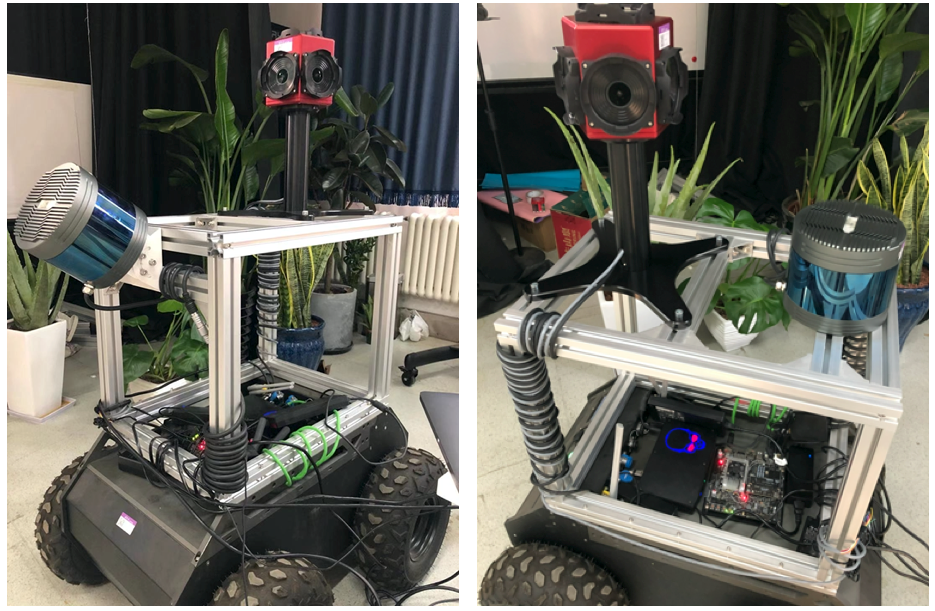

徐阳
大场景视觉观测是利用立体测量仪器及相关算法，以非接触式测量快速获取地球表面自然形态、地表人工设施精确三维信息的手段， 大场景的视觉观测在地质勘探、灾害救援、军事侦察、航天测绘等战略领域均具有重要的应用前景。在实际应用中，通过对采集到的三维和二维视觉信息进行融合， 可以更加全面及精准地捕捉真实世界的立体信息，满足多领域对快速动态观测的需求，为提供获取现实世界真实场景信息的有效科学观测途径。 目前我们已基于移动式机器人搭建了针对大规模场景的激光雷达与全景相机融合动态观测设备，同时对点云和视图融合及增强算法进行了研究，并对校园中的部分场景数据进行了采集。
此处有视频，视频连接：https://www.bilibili.com/video/av82232943Figure 1. 校园场景观测的扫描轨迹图，其中黄色线条为运行的移动轨迹
Figure 2. 已搭建的第一代大场景移动视觉观测原型机

Figure 3. 已搭建的第二代大场景移动视觉观测原型机